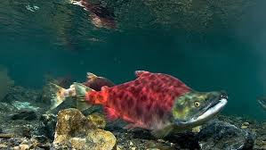

Native to East Asia, the goldfish is a relatively small member of the carp family (which also includes the Prussian carp and the crucian carp). It was first selectively bred for color in imperial China more than 1,000 years ago, and several distinct breeds have since been developed.
Salmon

They're found in tributaries of the Pacific and Atlantic Oceans, and most species are anadromous: They are born in streams and rivers, migrate out to the open sea, and then return to freshwater again to reproduce. Salmons have sleek, streamlined bodies that typically change color throughout their lifetimes.
Tuna
Tuna's spawning habitat for the western population is in the Gulf of Mexico, while the eastern population spawns in the Mediterranean Sea. RANGE: Atlantic bluefin tuna have historically ranged throughout the Atlantic Ocean, but now exist primarily in the North Atlantic Ocean and associated seas, such as the Mediterranean Sea
Z
Swordfish are found around the world in tropical, temperate, and sometimes cold waters of the Atlantic, Indian, and Pacific Oceans. They are found in the Gulf Stream of the Western North Atlantic, extending north into the Grand Banks of Newfoundland.
Occurring worldwide in near shore tropical and subtropical seas (30°N – 30°S), the great barracuda is common in the western Atlantic Ocean from Massachusetts (U.S.) to Brazil. It is also found in the Gulf of Mexico and the Caribbean Sea as well as the eastern Atlantic Ocean, Indo-Pacific, and the Red Sea.